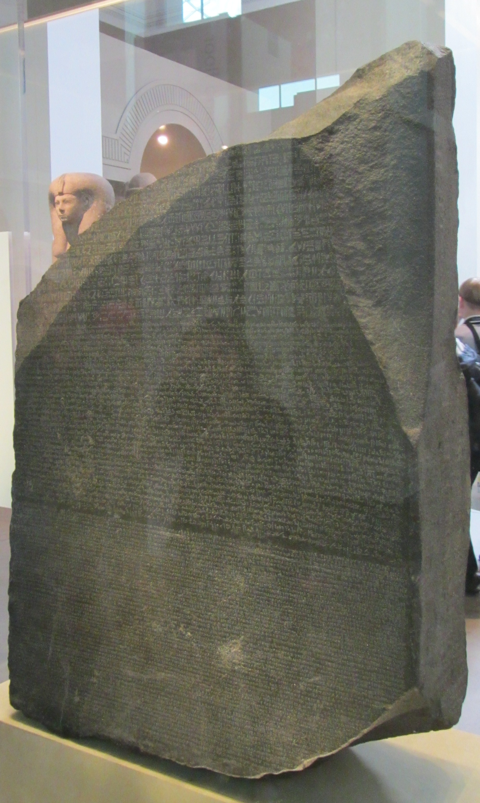
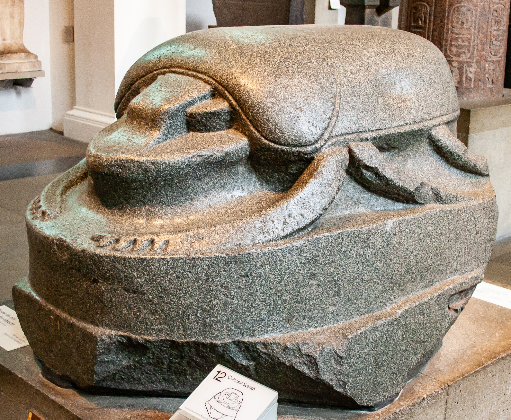
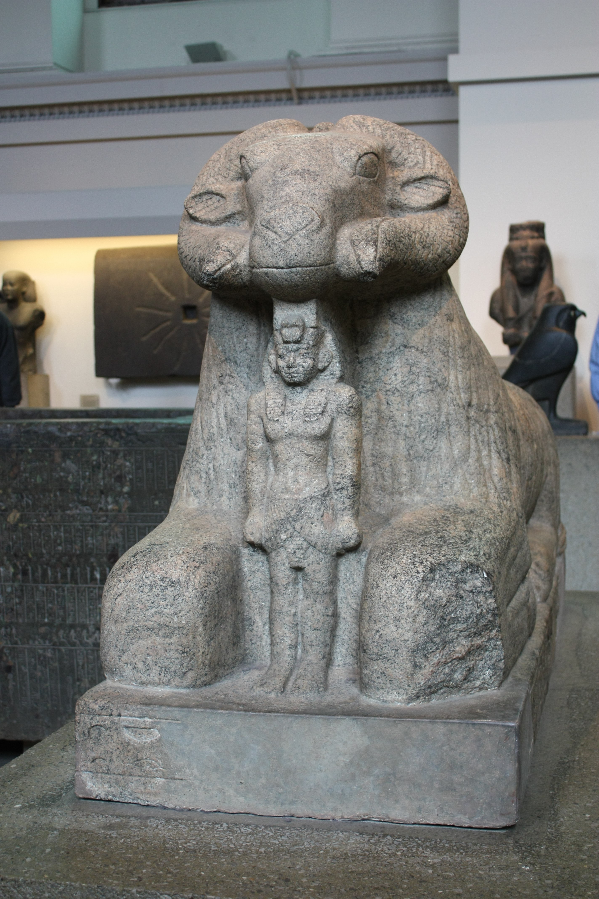
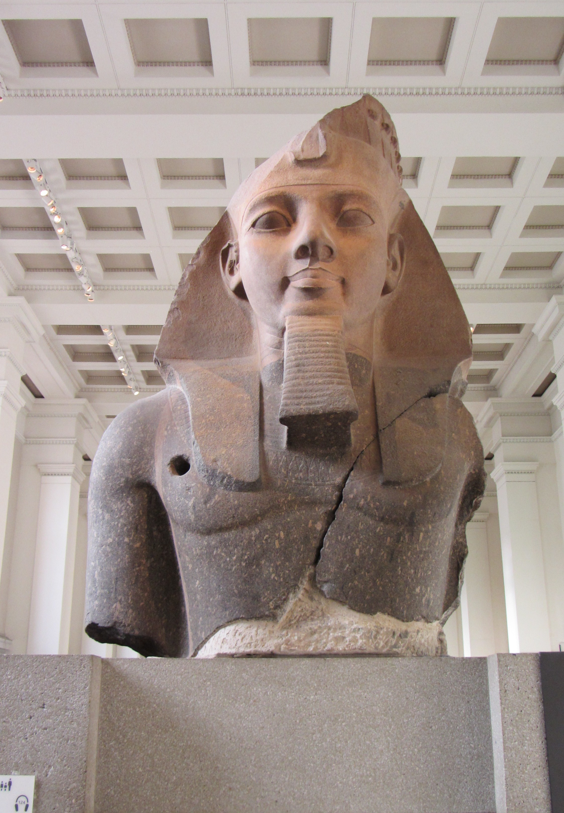
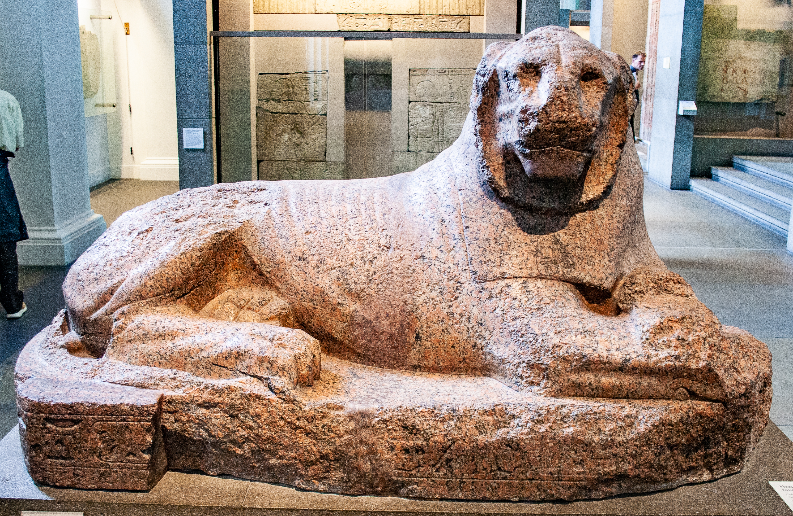
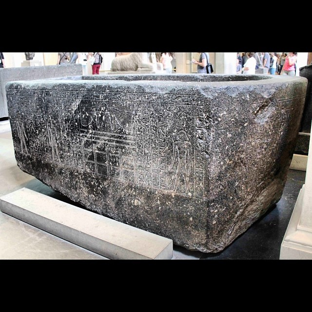

HERITAGE / XRÉgypte antique · EA24Pierre de Rosette

Photo : BabelStone · CC-BY-SA-3.0
Source de la photographie
HERITAGE / XRÉgypte antique · EA74Scarabée monumental

Photo : Szilas · CC-BY-SA-4.0
Source de la photographie
HERITAGE / XRÉgypte antique · EA1779Bélier d’Amon protégeant Taharqa

Photo : M0tty · CC-BY-SA-3.0
Source de la photographie
HERITAGE / XRÉgypte antique · EA19Buste colossal de Ramsès II

Photo : BabelStone · CC-BY-SA-3.0
Source de la photographie
HERITAGE / XRÉgypte antique · EA1Lion de Prudhoe — EA1

Photo : Szilas · CC-BY-SA-4.0
Source de la photographie
HERITAGE / XRÉgypte antique · EA23Sarcophage de Hapmen

Photo : akhenatenator · CC0-1.0
Source de la photographie